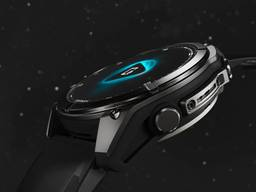
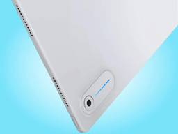
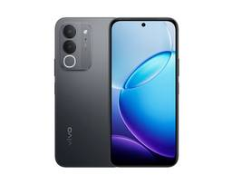
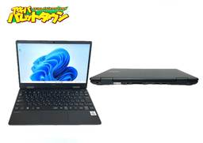
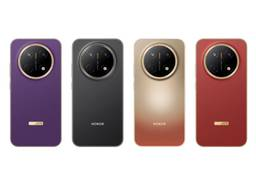

デイリーガジェット
https://daily-gadget.net/
デイリーガジェットは、スマホや海外発のユニークなガジェット、クラウドファンディングの注目アイテムまで幅広くレビュー。生活をもっと楽しく快適にする視点で、日常に驚きと便利さを届けるガジェット情報メディアです。
フィード
「iPlay 80 mini Pro」が欧州発売！Android 16と90Hz液晶搭載、軽量8.4型タブレット
デイリーガジェット
日本や中国市場で先行して販売されていたAlldocubeの8.4インチAndroidタブレット「iPlay 80 mini Pro」が、欧州のAmazonを通じても販売を開始しました。本機は、最新のAndroid 16を...投稿 「iPlay 80 mini Pro」が欧州発売！Android 16と90Hz液晶搭載、軽量8.4型タブレット は デイリーガジェット に最初に表示されました。関連記事:ALLDOCUBEの人気タブレットがAmaon初売りセールでかなりお得に！iPlay 60 miniが8,000円台、iPlay 70Eが1.6万円などALLDOCUBE iPlay 70E を実機レビュー！110Hz＆SIM対応で普段使いに最適な11インチタブレットが1万円台と満足度高い！最新格安タブレット徹底比較！Alldocube iPlay 40 対 Teclast M40【iPlay 40強っ】
6時間前
「Honor X9e Pro」が海外発表！11000mAh搭載で数日間充電不要のタフネススマートフォン
デイリーガジェット
Honorは、マレーシア市場に向けて新型スマートフォン「Honor X9e Pro」を正式に発表しました。最大の特徴は、一般的なスマートフォンの2倍以上に相当する11,000mAhのシリコンカーボンバッテリーを搭載してい...投稿 「Honor X9e Pro」が海外発表！11000mAh搭載で数日間充電不要のタフネススマートフォン は デイリーガジェット に最初に表示されました。関連記事:HONOR「X9e Pro」がマレーシアで発表！前世代から約3割増の11000mAh電池と80W急速充電HONOR「X9e Pro」が9月24日にマレーシアで正式発表へ！11,000mAhバッテリーと3m落下に耐える頑丈ボディ省電力SoC「Helio G81」と90Hz液晶を採用した『HONOR X5d』シリーズ発表！低価格スマホながら長時間の稼働性能をどれほど発揮するか。
7時間前
「PlayStation Portal」最新アップデート配信！バッテリー劣化を防ぐ「80%充電制限」を追加
デイリーガジェット
ソニーは、PlayStation Portal向けに最新ファームウェア「バージョン7.1.7」の配信を開始しました。目玉は、端末の長期的なバッテリー寿命を維持するための「80%充電制限」の追加です。携帯機は満充電のまま長...投稿 「PlayStation Portal」最新アップデート配信！バッテリー劣化を防ぐ「80%充電制限」を追加 は デイリーガジェット に最初に表示されました。関連記事:ソニーがPS5新ヘッドセット「PULSE」「PULSE Edge」を発表！大型平面磁界ドライバー搭載Sonyがディスク生産を2028年1月に終了、PS6の発売は早くても2028年末と調査会社Ampereが分析ソニーがPS3・PS Vitaの「PlayStation Store」閉鎖を正式発表、2027年7月に世界全域で購入終了へ
8時間前
「GT NX Controller」「GT NX Station」発表！スマホでマウス級エイムを実現する周辺機器
デイリーガジェット
Infinixが、モバイルゲーマーの課題を直接的に解決する新デバイス「GT NX Controller」および「GT NX Station」を発表しました。タッチスクリーン特有の繊細な操作を物理パッドで再現するコントロー...投稿 「GT NX Controller」「GT NX Station」発表！スマホでマウス級エイムを実現する周辺機器 は デイリーガジェット に最初に表示されました。関連記事:マイクロソフトから初代カラーの「Xbox Series X25」が登場！25周年を記念したスケルトングリーン仕様で11月に一部市場で限定発売へValve「Steam Controller」5月4日予約開始。ドリフト防ぐTMRと独自ジャイロでPCゲーム操作はどう変わるのか。Valve新型「Steam Controller」のレビュー先行流出、デュアルトラックパッドとTMRスティック搭載で99ドルか
9時間前

「Garmin Fenix 8」最新アップデート配信！音声操作への対応とSpotify不具合を解消
デイリーガジェット
Garminは、フラッグシップスマートウォッチ「Fenix 8」および「Fenix E」向けに、システムソフトウェアバージョン「23.39」の提供を開始しました。今回のアップデートでは、新たにハンズフリーでの音声コマンド...投稿 「Garmin Fenix 8」最新アップデート配信！音声操作への対応とSpotify不具合を解消 は デイリーガジェット に最初に表示されました。関連記事:Garmin「Fenix 9」「Fenix 9 Pro」が同時発売へ！43mm復活でLTEと衛星通信、Enduro 4はMIP継続フラッグシップGPSウォッチ「Garmin Fenix 9」が2026年後半に登場か。有機ELへのソーラー充電とGPS精度の向上が新機能の有力候補Garminがソーラー充電を強化したスマートウォッチFenix 7米国発売！
13時間前

「Googlebook Duet m」リーク情報！13型OLEDと分離キーボード採用の期待作
デイリーガジェット
Evan Blass氏のリークにより、Lenovoが新OS「Googlebook OS」を搭載した13インチタブレット「Googlebook Duet m」を開発中であることが明らかになりました。クラムシェル型のノートP...投稿 「Googlebook Duet m」リーク情報！13型OLEDと分離キーボード採用の期待作 は デイリーガジェット に最初に表示されました。関連記事:Lenovo製「Googlebook」の画像が初リーク！WindowsキーはGキーに。Chromebook後継が今秋登場Googleが約7年ぶりにノートPC市場へ復帰！新ブランド「Googlebook」はASUSなど5大メーカーから今秋より一斉発売か。motorola razr 2025の「FIFAワールドカップ特別版」がリーク、Dimensity 7400X搭載・CES 2026での実機展開も示唆
14時間前

「Vivo Y600i」が発表！8000mAh大容量バッテリーとIP69防塵防水を備えたスマホ
デイリーガジェット
Vivoから新型スマートフォン「Vivo Y600i」が中国市場向けに発表されました。価格は1,999人民元（約300ドル）で、実用性を重視したスペック構成となっています。8,000mAhの大容量バッテリーとIP69の防...投稿 「Vivo Y600i」が発表！8000mAh大容量バッテリーとIP69防塵防水を備えたスマホ は デイリーガジェット に最初に表示されました。関連記事:vivo「X500」が海外で正式発売！Dimensity 9600Mチップに7500mAhバッテリーとツァイス3眼カメラを搭載Vivo「X300E」がリーク情報！7.99mmの薄型に7,015mAh電池と5,000万画素ツァイス3眼、Snapdragon 8 Gen 5搭載かvivo「X Fold6」が中国で発表、シリーズ初のMediaTek製チップと7000mAhバッテリーを搭載した折りたたみスマホ
15時間前

第10世代Corei5搭載のNEC製中古ノートPCが税込16,500円！富士通製が19,800円ほかアキバパレットタウン週末セール品全まとめ
デイリーガジェット
中古PC・サーバ販売のアキバパレットタウン。 こちらで9月26日（土）から、週末セールが開催されます！ 第10世代Corei5搭載、8/256 GB SSD 、12.5インチ、Windows 11 Proという構成のNE...投稿 第10世代Corei5搭載のNEC製中古ノートPCが税込16,500円！富士通製が19,800円ほかアキバパレットタウン週末セール品全まとめ は デイリーガジェット に最初に表示されました。関連記事:第10世代Corei5搭載のNEC製中古ノートPCが17,800円！Panasonic製が19,800円ほかアキバパレットタウン週末セール品全まとめ第11世代Corei7搭載のLenovo製中古ノートPCが税込39,800円！Fujitsu製が19,800円ほかアキバパレットタウン週末セール品全まとめ第10世代Core i５搭載の富士通製中古ノートPCが21,780円！ほかアキバパレットタウン週末セール品全まとめ
1日前
OPPO「Enco X4」を海外で発表！スマホなしで24言語を訳すAI翻訳と最大53時間再生を備えた新フラッグシップイヤホン
デイリーガジェット
OPPOは2026年9月22日、中国で開催した「Find X10」シリーズの発表会にあわせ、完全ワイヤレスイヤホンの最上位モデル「Enco X4」を発表しました。 中国での希望小売価格は1199元で、初回販売価格は109...投稿 OPPO「Enco X4」を海外で発表！スマホなしで24言語を訳すAI翻訳と最大53時間再生を備えた新フラッグシップイヤホン は デイリーガジェット に最初に表示されました。関連記事:OPPO「Find X10」の公式カメラ作例を公開！標準モデルなのにメインも望遠も2億画素、ハッセルブラッド監修の自然な描写「Oppo Find X10」シリーズが9月22日発表！8000mAhバッテリーと2億画素カメラ搭載の最新スマホOnePlus 16とOppo Find X10 Ultra、インドも見送りか。185Hzと9,000mAh級の最新機が中国専売へ
1日前

HONOR「X9e Pro」がマレーシアで発表！前世代から約3割増の11000mAh電池と80W急速充電
デイリーガジェット
HONORは2026年9月24日、ミドルレンジスマートフォン「X9e Pro」をマレーシアで発表し、同日から予約受付を開始しました。最大の特徴は11,000mAhの大容量バッテリーで、メーカーは動画再生で最大66.8時間...投稿 HONOR「X9e Pro」がマレーシアで発表！前世代から約3割増の11000mAh電池と80W急速充電 は デイリーガジェット に最初に表示されました。関連記事:HONOR「HONOR 700」シリーズに1.72インチ背面ディスプレイ内蔵の噂！2億画素メインカメラで自撮りできる設計かHONOR「X9e Pro」が9月24日にマレーシアで正式発表へ！11,000mAhバッテリーと3m落下に耐える頑丈ボディHonor「Pad 20 Pro」がマレーシアで登場！Snapdragon 8s Gen 4と165Hz駆動の12.1インチ大画面を搭載
1日前